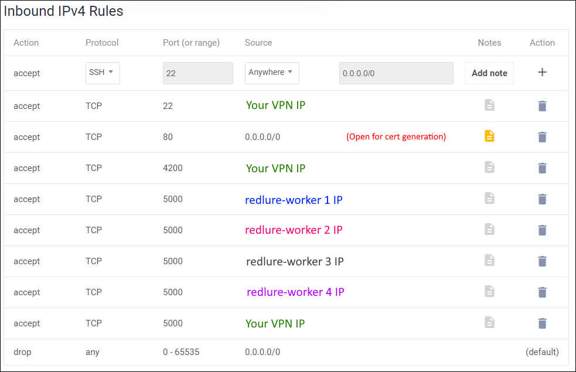

Recommended Firewall Setup (Console)
The redlure-console API, redlure-client web UI and redlure-worker APIs should not be left open to the internet. These are currently running on development servers (workers spin up phishing sites with gunicorn3 instead of a dev web server). I highly recommend applying firewall rules to your redlure infrastructure so that only required traffic is allowed.
On top of that, there's no reason to open these to the internet anyways :)
If you are interested in the recommended firewall setup for redlure-workers, it can be found here.
Basics to consider:
- SSH access - you'll need to perform setup and may want to check logs. Ideally SSH access is limited to your own VPN or infrastructure.
- Let's Encrypt - I allow traffic to 80 here so I can get Let's Encrypt certs to host redlure-client with (running on the same host as the console)
- redlure-console communications - Both you and any of your redure-workers will need to communicate to the console over 5000 (default).
- Access to the redlure-client - I host the client and console on the same server, so I've also allowed access from my VPN to the client interface, 4200 by default. 443 wouldn't be ever used in this setup, so you could easily change the client to run off 443 instead of 4200.
